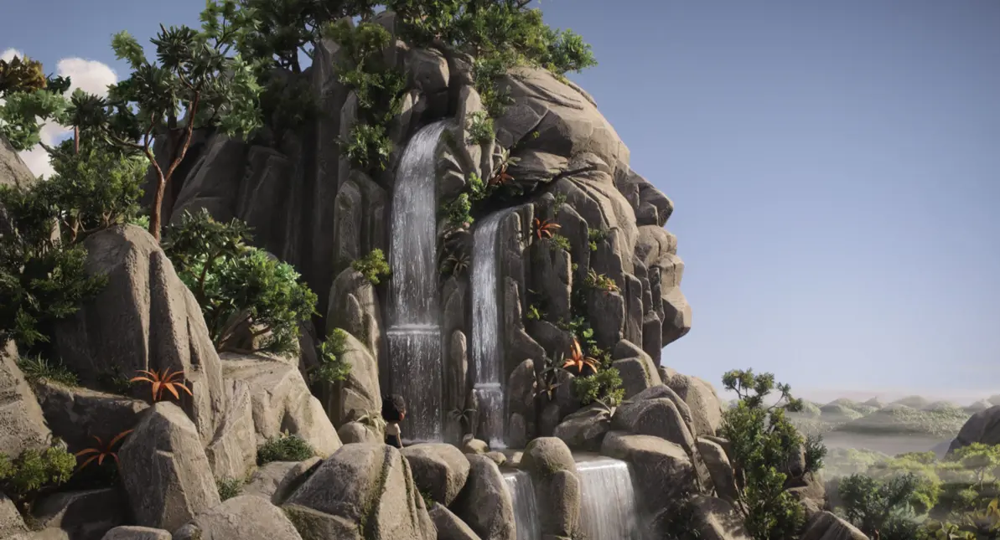

.jpg
)
Linda e il pollo
Diretto da Sébastien Laudenbach e Chiara Malta
l'animazione non è solo un genere infantile,
a tratti infantilizzante, ma è una forma specifica
che può veicolare
tematiche diverse e sperimentare
con la forma, senza doversi ancorare
a un lavoro
pedagogico, spesso moralizzante.
I film di animazione sono ancora frequentemente
fatti “per rassicurare i genitori”
e non per creare
un discorso trasversale tra bambini e adulti,
ma
anche tra bambini e bambini, e tra adulti e adulti.
.jpg
)
Flow
Diretto da Gints Zilbalodis
I film d'animazione d'autore europei sono spesso liquidati come film difficili o troppo intellettuali.
Uno di questi è Flow di Gints Zilbalodis, proveniente
dall’ultimo Festival di Cannes
che riesce a farci
immergere in un mondo imperfetto ma immersivo,
grazie a un tipo di animazione CGI povera
dall’ultimo Festival di Cannes che riesce a farci
immergere in un mondo imperfetto ma immersivo,
grazie a un tipo di animazione CGI povera

Sauvages
Diretto da Camille Vidal-Naquet
Poi non possiamo non parlare di Sauvages
di Claude Barras, opera seconda dopo
La mia vita da zucchina co-scritto con Céline Sciamma.
Che insieme a Linda e il pollo di Chiara Malta e
Sébastien Laudenbach, permettono non solo
di allenare l'occhio a tante rappresentazioni della realtà,
ma soprattutto permettono di immergersi in luoghi e mondi
“l’animazione è una forma d’arte che ha continuato
a essere inginocchiata commercialmente e industrialmente
al tavolo per bambini, ma è davvero matura, espressiva, bella, complessa.
Quindi una vittoria aiuta, ma si tratta di andare avanti come comunità”
Guillermo del Toro
a essere inginocchiata commercialmente e industrialmente
al tavolo per bambini, ma è davvero matura, espressiva, bella, complessa.
Quindi una vittoria aiuta, ma si tratta di andare avanti come comunità”
Guillermo del Toro

Invelle
Diretto da Simone Massi